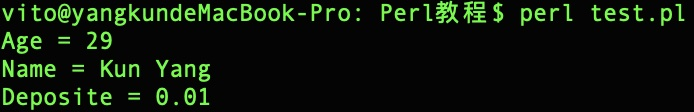
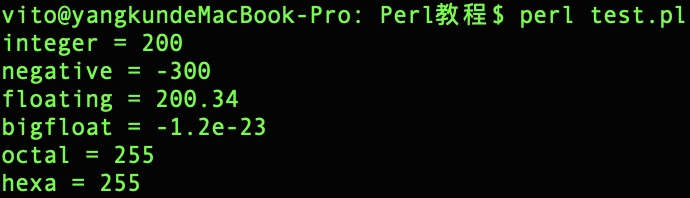
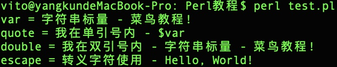
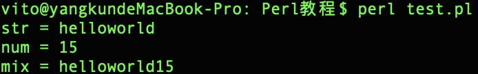
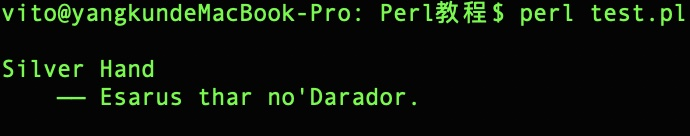
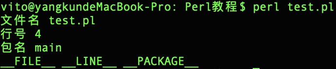
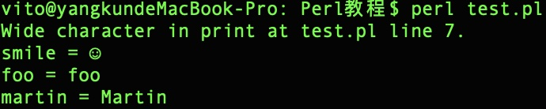

Perl 标量
标量是一个简单的数据单元。
标量可以是一个整数，浮点数，字符，字符串，段落或者一个完整的网页。
以下实例演示了标量的简单应用：
实例
#!/usr/bin/perl
$age = 29; # 整型
$name = "Kun Yang"; # 字符串
$deposit = 0.01; # 浮点数
print "Age = $age\n";
print "Name = $name\n";
print "Deposite = $deposit\n";
执行以上程序，输出结果为：

数字标量
标量通常是一个数字或字符串，以下实例演示了不同类型的数字标量的使用：
实例
#!/usr/bin/perl
$integer = 200;
$negative = -300;
$floating = 200.340;
$bigfloat = -1.2E-23;
# 八进制 377 , 十进制为 255
$octal = 0377;
# 十六进制 FF, 十进制为 255
$hexa = 0xff;
print "integer = $integer\n";
print "negative = $negative\n";
print "floating = $floating\n";
print "bigfloat = $bigfloat\n";
print "octal = $octal\n";
print "hexa = $hexa\n";
执行以上程序，输出结果为：

字符串标量
以下实例演示了不同类型的字符串标量的使用，注意单引号和双引号的使用区别：
实例
#!/usr/bin/perl
$var = "字符串标量 - 菜鸟教程!";
$quote = '我在单引号内 - $var';
$double = "我在双引号内 - $var";
$escape = "转义字符使用 -\tHello, World!";
print "var = $var\n";
print "quote = $quote\n";
print "double = $double\n";
print "escape = $escape\n";
执行以上程序，输出结果为：

标量运算
以下实例演示了标量的简单运算：
实例
#!/usr/bin/perl
$str = "hello" . "world"; # 字符串连接
$num = 5 + 10; # 两数相加
$mul = 4 * 5; # 两数相乘
$mix = $str . $num; # 连接字符串和数字
print "str = $str\n";
print "num = $num\n";
print "mix = $mix\n";
执行以上程序，输出结果为：

多行字符串
我们可以使用双引号来输出多行字符串，如下所示：
实例
#!/usr/bin/perl
$string = "
Silver Hand
—— Esarus thar no'Darador.
";
print "$string\n";
执行以上程序，输出结果为：

你也可以使用 "here" document 的语法格式来输出多行：
实例
#!/usr/bin/perl
print <<EOF;
Silver Hand
—— Esarus thar no'Darador.
EOF
执行以上程序，输出结果为：
特殊字符
以下我们将演示 Perl 中特殊字符的应用，如 __FILE__, __LINE__, 和 __PACKAGE__ 分别表示当前执行脚本的文件名，行号，包名。
注意： __ 是两条下划线，__FILE__ 前后各两条下划线。
这些特殊字符是单独的标记，不能写在字符串中，例如：
实例
#!/usr/bin/perl
print "文件名 ". __FILE__ . "\n";
print "行号 " . __LINE__ ."\n";
print "包名 " . __PACKAGE__ ."\n";
# 无法解析
print "__FILE__ __LINE__ __PACKAGE__\n";
执行以上程序，输出结果为：

v 字符串
一个以 v 开头,后面跟着一个或多个用句点分隔的整数,会被当作一个字串文本。
当你想为每个字符 直接声明其数字值时,v-字串提供了一种更清晰的构造这类字串的方法，而不像 "\x{1}\x{14}\x{12c}\x{fa0}" 这种不易于理解，我们可以看下面的实例：
实例
#!/usr/bin/perl
$smile = v9786;
$foo = v102.111.111;
$martin = v77.97.114.116.105.110;
print "smile = $smile\n";
print "foo = $foo\n";
print "martin = $martin\n";
执行以上程序，输出结果为：
